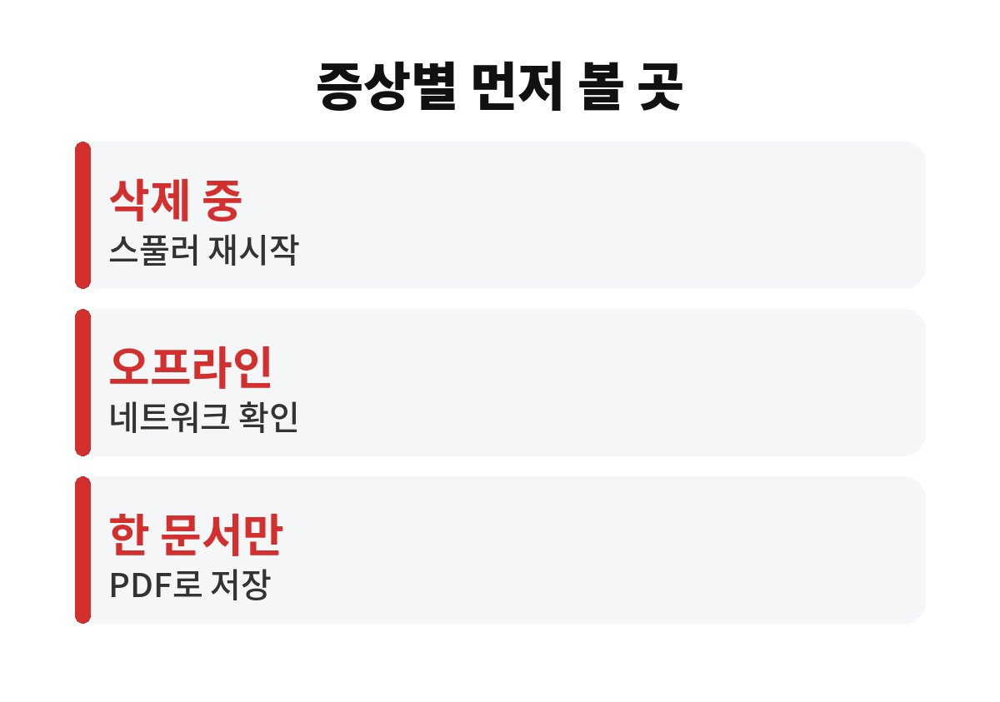
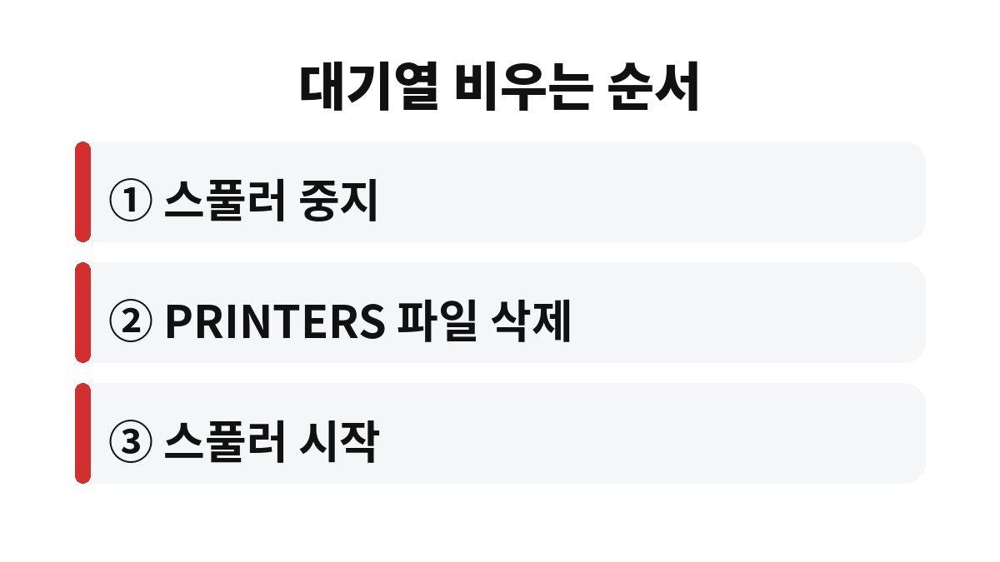

프린터 인쇄 대기 중 상태에서 문서가 넘어가지 않으면 대부분 프린터가 아니라 PC 안의 인쇄 대기열이 막힌 경우라서, Print Spooler 서비스를 다시 시작하고 대기열 폴더를 비우면 풀린다.
프린터 전원을 껐다 켜거나 케이블을 만지기 전에 PC 쪽부터 보는 편이 빠르다.
거래명세서를 뽑아야 하는데 인쇄 창에 문서 하나가 '삭제 중'으로 몇 분째 멈춰 있는 장면이 가장 흔한 사례다.
윈도우는 인쇄를 누르면 문서를 곧바로 프린터로 보내지 않고 Print Spooler라는 서비스가 임시 파일로 받아 둔다.
이 임시 파일 하나가 깨지거나 프린터 연결이 끊긴 채 쌓이면 뒤에 오는 문서까지 줄줄이 멈춘다.
인쇄 창에서 삭제를 눌러도 '삭제 중'으로만 남는 것은 서비스가 그 파일을 붙잡고 있다는 신호다.
다른 PC나 휴대폰에서 같은 프린터로 시험 인쇄가 되면 프린터 본체는 정상이다.
그 경우 이 글의 순서가 맞다.
어느 기기에서도 안 나오면 용지 걸림, 토너·잉크 경고, 공유기와의 연결부터 본다.
예를 들어 거래처에 보낼 견적서를 여러 장 한꺼번에 인쇄했는데 두 번째 장에서 멈췄다면, 첫 장 뒤에 이어질 문서가 모두 같은 줄에 갇힌 상태다.
이때 프린터를 껐다 켜도 PC 쪽 대기열은 그대로 남아 있어서 다시 켠 뒤에도 같은 자리에서 멈추는 일이 많다.
| 증상 | 먼저 볼 곳 | 이 방법이 맞지 않는 경우 |
|---|---|---|
| '삭제 중'에서 멈춤 | 스풀러 재시작과 대기열 폴더 비우기 | 프린터 본체 화면에 오류가 떠 있을 때 |
| 상태가 '오프라인' | 프린터 전원과 같은 네트워크 연결 여부 | USB 연결인데 케이블을 바꾼 적이 없을 때 |
| 한 문서만 계속 멈춤 | 그 문서를 PDF로 저장해 다시 인쇄 | 다른 문서도 모두 안 나올 때 |
| 업데이트 직후부터 안 됨 | 프린터 제거 후 다시 추가 | 업데이트와 무관하게 오래전부터 불안정할 때 |


폴더를 열 때 관리자 권한을 요구하는 창이 뜨면 계속을 누르면 된다.
회사 PC처럼 관리자 계정이 막혀 있으면 이 방법은 쓸 수 없고 PC 관리자에게 요청해야 한다.
설정 > Bluetooth 및 장치 > 프린터 및 스캐너에서 해당 프린터를 열고 인쇄 대기열을 본다.
프린터 메뉴에 '오프라인으로 프린터 사용'이 체크되어 있으면 해제한다.
공유기를 바꾸거나 재부팅한 뒤라면 네트워크 프린터의 IP 주소가 바뀌었을 수 있어, 프린터를 지우고 다시 추가하는 쪽이 낫다.
프린터를 지우기 전에 프린터 속성에서 포트 이름과 IP 주소를 메모해 둔다.
다시 추가할 때 같은 주소를 입력해야 기존 설정이 이어지고, 사무실에서 여러 대가 같은 프린터를 쓴다면 다른 PC도 같은 문제를 겪는지 먼저 물어본다.
그래도 같은 증상이 반복되면 제조사 지원 페이지에서 내 모델에 맞는 최신 드라이버를 받아 설치한다.
윈도우가 자동으로 깔아 준 기본 드라이버는 복합기의 스캔·팩스 기능에서 문제를 일으키기도 한다.
대기열이 한 번 풀렸다면 다음에 같은 일이 생길 때 같은 여섯 단계를 그대로 반복하면 된다.
한 달에 두세 번 이상 막힌다면 드라이버 교체나 프린터 점검을 제조사 서비스센터에 문의하는 쪽이 빠르다.
참고 자료: Microsoft 지원 「Fix print spooler service not running errors in Windows」(2026년 11월 확인)
※ 2026년 기준 공식 안내를 바탕으로 정리한 글이며, 기기·앱 버전에 따라 메뉴 이름이 다를 수 있다.